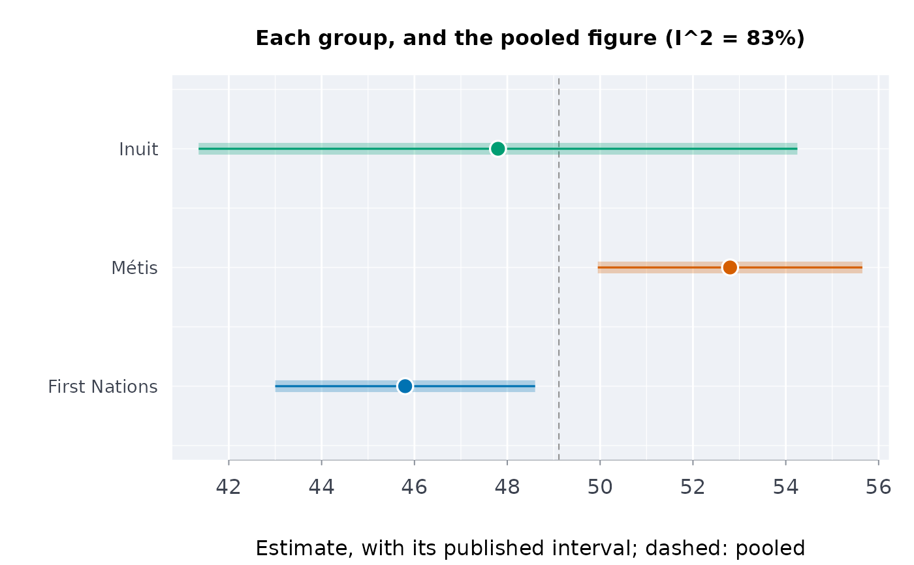

Do distinct groups differ? A heterogeneity test before pooling
Source:R/indigenous_mental_health.R
dstntst.RdTests whether the estimates of one indicator for distinct groups (First Nations, Metis and Inuit; Aboriginal and Torres Strait Islander people; any groups with published intervals) differ more than their intervals allow, and says how much of their spread is real: the evidence for reporting each group distinctly rather than as one pooled figure.
Arguments
- data
A data frame, one row per group.
- grp, est, lower, upper
Column names.
- qual
Optional column of quality flags; suppressed rows are left out (see
qltyrcd).- conflvl
Confidence level of the published intervals, and the level of the verdict printed (default 0.95).
- pooled
Optional labels of rows that pool other groups.
Value
A list of class rmbl_distinctions: groups (the
estimates used, with their standard errors), pooled (the
inverse-variance mean) and poose, q, df,
p_value, i2, leftout (the rows not used) and
conflvl. print() and plot() show it.
Details
With estimates \(y_g\), standard errors \(s_g\) from the
published intervals and weights \(w_g = 1/s_g^2\), Cochran's \(Q = \sum
w_g (y_g - \bar y_w)^2\) has a chi-squared distribution on \(G - 1\) degrees
of freedom when the groups share one value, and \(I^2 = \max(0, (Q -
(G-1))/Q)\) is the share of the spread that is real rather than sampling error
(Higgins and Thompson 2002). A pooled figure is a weighted mean of different
populations whenever \(I^2\) is large; the population-weighted total
Statistics Canada publishes also depends on how many people are in each
group, so it is mostly a First Nations figure where First Nations people are
most of the Indigenous population. Rows that pool groups are left out
(pooled; see indgap); every other row is included, so
drop the reference group (non-Indigenous people) yourself, and never test
overlapping groups ("alone" beside “alone or in combination”)
together: they are not independent. With two or three groups the test has
little power and \(I^2\) is imprecise; a large \(p\) is not evidence that
the groups are the same.
References
Higgins JPT, Thompson SG (2002). Quantifying heterogeneity in a meta-analysis. Statistics in Medicine 21(11):1539-1558. doi:10.1002/sim.1186
Examples
# perceived mental health very good or excellent, 2019/2022, adults (table
# 13-10-0924-01)
h <- indiex("health")
mh <- h[
h$period == "2019/2022" &
h$age == "Total, 18 years and over" &
h$group != "Non-Indigenous" &
h$indicator == "Perceived mental health, very good or excellent",
]
dt <- dstntst(mh, "group", "estimate", "lower", "upper", qual = "quality")
dt
#> ╭── Distinctions test ───────────────────────────────────────────────────╮
#> │ Groups 3 │
#> │ Cochran's Q 11.97 on 2 df │
#> │ p-value 0.003 │
#> │ I-squared 83% of the variation is beyond chance │
#> │ Pooled 49.11 (se 0.973, inverse-variance mean) │
#> │ │
#> │ group estimate se 95% CI │
#> │ ------------- -------- ----- -------------- │
#> │ First Nations 45.80 1.429 [43.00, 48.60] │
#> │ Métis 52.80 1.454 [49.95, 55.65] │
#> │ Inuit 47.80 3.291 [41.35, 54.25] │
#> │ │
#> │ Q says the groups differ: report each one, not the pooled figure. │
#> │ Q = 11.97, p = 0.00252. │
#> │ │
#> │ Distinctions-based: each group is reported on its own; a │
#> │ pan-Indigenous total is left out of the test, never used as a group. │
#> │ Higgins and Thompson (2002) for Q and I-squared. │
#> ╰────────────────────────────────────────────────────────────────────────╯
plot(dt)

# your own table: made-up numbers, with the pooled row named
own <- data.frame(
group = c("Aboriginal", "Torres Strait Islander", "Both"),
est = c(24.0, 31.0, 24.6),
lo = c(22.1, 26.2, 22.8),
hi = c(25.9, 35.8, 26.4)
)
dstntst(own, "group", "est", "lo", "hi", pooled = "Both")
#> ╭── Distinctions test ───────────────────────────────────────────────────╮
#> │ Groups 2 │
#> │ Cochran's Q 7.06 on 1 df │
#> │ p-value 0.008 │
#> │ I-squared 86% of the variation is beyond chance │
#> │ Pooled 24.95 (se 0.901, inverse-variance mean) │
#> │ Left out Both │
#> │ │
#> │ group estimate se 95% CI │
#> │ ---------------------- -------- ----- -------------- │
#> │ Aboriginal 24 0.969 [22.10, 25.90] │
#> │ Torres Strait Islander 31 2.449 [26.20, 35.80] │
#> │ │
#> │ Q says the groups differ: report each one, not the pooled figure. │
#> │ Q = 7.06, p = 0.00787. │
#> │ │
#> │ Distinctions-based: each group is reported on its own; a │
#> │ pan-Indigenous total is left out of the test, never used as a group. │
#> │ Higgins and Thompson (2002) for Q and I-squared. │
#> ╰────────────────────────────────────────────────────────────────────────╯